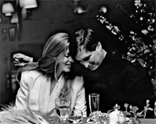

Sıradan Bir Adam
Aşk Üç Harfli Bir Kelimedir Sadece

Laurene Powell’la, 1991
Joan Baez
Jobs 1982’de, Macintosh’un üstünde çalışırken, ünlü folk şarkıcı Joan Baez’le kız kardeşi Mimi Fariña aracılığıyla tanıştı; Fariña hapishanelere bilgisayar bağışı yapılması için uğraşan bir hayır kurumunun yöneticisiydi. Birkaç hafta sonra Jobs’la Baez Cupertino’da öğle yemeği yediler. “Fazla beklentim yoktu, ama o cidden zeki ve eğlenceliydi,” diye anımsıyordu Jobs. Regis McKenna’nın yanında çalışmış, Polinezya ve Polonez kanı taşıyan güzel bir kadın olan Barbara Jasinski’yle ilişkisi bitmeye yaklaşmıştı. Hawaii’de tatil yapmış, Santa Cruz dağlarındaki bir evde kalmış, hatta Baez’in bir konserine birlikte gitmişlerdi. Jobs Jasinski’yle arası açıldıkça Baez’le daha ciddi bir yakınlık kurmaya başladı. O 27 yaşındaydı, Baez ise 41; ama birkaç yıl duygusal ilişki yaşadılar. “Tesadüfen tanışıp önce arkadaş, sonra da sevgili olduk ve ciddi bir ilişki yaşadık,” diye anımsıyordu Jobs biraz özlemle.
Jobs’ın Reed Üniversitesi’nden arkadaşı Elizabeth Holmes, onun Baez’le çıkmasının sebeplerinden birinin –Baez’in güzel, espritüel ve yetenekli olmasının yanı sıra–, Baez’in eskiden Bob Dylan’ın sevgilisi olması olduğuna inanıyordu. “Steve Dylan’la böyle bir bağlantı kurmaya bayıldı,” dedi sonradan. Baez’le Dylan 1960’ların başlarında sevgiliydiler, sonrasında da arkadaş olarak birlikte turnelere çıkmışlardı, 1975’teki Rolling Thunder Revue turnesi de dahil olmak üzere (Jobs’ta bu konserlerin korsan kayıtları vardı.)
Baez Jobs’la tanıştığında, savaş karşıtı aktivist David Harris’le evliyken doğurduğu oğlu Gabriel 14 yaşındaydı. Baez öğle yemeğinde Jobs’a Gabe’e daktilo kullanmayı öğretmeye çalıştığını söyledi. “Daktilo mu?” diye sordu Jobs. Baez evet deyince Jobs şu karşılığı verdi: “Ama daktilolar antika oldu artık.”
“Daktilolar antika olduysa ben ne oldum peki?” diye sordu Baez. Sıkıntılı bir sessizlik oldu. Baez sonradan bana şöyle dedi: “Bunu söyler söylemez yanıtın bariz olduğunu fark ettim. Sorum havada öylece asılı kaldı. Dehşete kapılmıştım.”
Bir gün Jobs, Baez’le birlikte ofisine dalıp ona Macintosh’un prototipini gösterince Macintosh ekibi hayretler içinde kaldı. Gizliliğe düşkün olan Jobs’ın bilgisayarı dışarıdan birine göstermesine şaşırmışlardı, ama Joan Baez’i görmek daha da afallamalarına yol açmıştı. Jobs Gabe’e bir Apple II ve daha sonra Baez’e bir Macintosh verdi. Onları ziyarete gidip, hoşlandığı özellikleri gösterdi. “Tatlı ve sabırlıydı, ama öyle bilgiliydi ki bana öğretmekte zorlanıyordu,” diye anımsıyordu Baez.
Jobs birden zengin olmuş bir multimilyonerdi, Baez ise dünya çapında ünlü olmasına karşın hoş bir şekilde sıradandı ve çok da zengin değildi. Jobs’ı nasıl yorumlayacağını bilemedi ve neredeyse otuz yıl sonra ondan bahsederken bile Jobs’ı kafa karıştırıcı buluyordu. Jobs Ralph Lauren’den ve Polo Mağazası’ndan bahsetti; Baez oraya hiç gitmediğini itiraf etti. “Orada güzel bir kırmızı elbise var, tam sana göre,” diyen Jobs onu Stanford alışveriş merkezindeki mağazaya götürdü. Baez şöyle anımsıyordu: “Kendime dedim ki, tamam, harika, dünyanın en zengin adamlarından biriyleyim ve bana güzel bir elbise almak istiyor.” Teklifi kabul etti. “Parasını sen ödemelisin,” dedi Jobs. Baez biraz şaşırdı ve ona bu elbiseye o kadar para veremeyeceğini söyledi. Jobs bir şey demedi ve mağazadan çıktılar. Baez “Birisi bütün akşam boyunca öyle konuşsa, sana o elbiseyi alacağını düşünmez misin?” diye sordu bana; şaşkınlığı gerçek gibiydi. “Kırmızı elbise hadisesinin gizemini çözmek artık senin sorumluluğunda. Ben düşününce tuhaf oluyorum biraz.” Jobs ona bilgisayar veriyordu ama elbise vermiyordu; ona getirdiği çiçekler de ofisteki bir etkinlikten kalma oluyordu hep. “Hem romantikti, hem de romantik olmaya korkuyordu,” dedi Baez.
Jobs NeXT bilgisayarın üstünde çalışırken, bilgisayarın ne kadar iyi müzik çalabildiğini göstermek için Baez’in Woodside’daki evine gitti. “Bilgisayarda bir Brahms kuarteti çaldı ve eninde sonunda bilgisayarların insanlardan daha iyi, hatta daha duygulu çalacaklarını ve kadansları daha iyi becereceklerini söyledi,” diye anımsıyordu Baez. Bu fikri iğrenç bulmuştu. “O neşelendikçe ben hiddetleniyordum, müziği nasıl böyle kirletebilirsin diye düşünüyordum.”
Jobs, Debi Coleman’la Joanna Hoffman’a Baez’le olan ilişkisinden bahsedecek ve ergen bir oğlu olan ve muhtemelen daha fazla çocuk istemeyen biriyle evlenip evlenmemesi gerektiğine kafa yoracaktı. “Bazen onu aşağılıyordu; sadece ‘sorunlardan’ bahseden bir şarkıcı olduğunu, Dylan gibi gerçek bir ‘politik’ şarkıcı olmadığını söylüyordu,” dedi Hoffman. “Baez güçlü bir kadındı ve sanırım Steve ona dizginlerin kendisinde olduğunu göstermek istiyordu. Hem Steve aile sahibi olmak istediğini söylerdi hep, ama Baez’le aile kurmayacağını biliyordu.”
Dolayısıyla üç yıl kadar sonra ilişkilerini bitirdiler ve arkadaş kaldılar. “Ona aşığım sanmıştım, ama sadece çok hoşlanıyordum aslında,” dedi Jobs sonradan. “Birlikte olmak alın yazımız değildi. Ben çocuk istiyordum, o ise daha fazla çocuk istemiyordu.” Baez 1989 tarihli anı kitabında kocasından ayrılmasından ve tekrar evlenmemesinin sebebinden bahsediyor. “Ben yalnızlığa aittim, o zamandan beri de yalnızım; ilişkiler yaşadığım oldu, ama çoğu yüzeyseldi,” diye yazdı. Kitabın sonuna hoş bir teşekkür ekledi: “Steve Jobs’a, beni kelime işlemci kullanmaya mutfağıma bir tane bırakarak zorladığı için teşekkürler.”
Joanne’le Mona’yı Bulmak
Jobs 31 yaşındayken, Apple’dan kovulmasından bir yıl sonra, sigara tiryakisi olan annesi Clara akciğer kanserine yakalandı. Jobs annesinin ölüm döşeğinin yanında zaman geçirdi, onunla geçmişte pek konuşmadığı şekillerde konuştu ve daha önce sormaktan kaçındığı bazı soruları sordu. “Babamla evlendiğinde bakire miydin?” diye sordu. Annesi konuşmakta zorlansa da gülümsemeyi başardı. Jobs’a daha önce evli olduğunu, ilk kocasının savaştan dönmediğini söyledi. Kendisinin ve Paul Jobs’ın onu evlat edinmelerinin bazı ayrıntılarını da anlattı.
Jobs o sıralar, kendisini evlatlık vermiş annesinin izini bulmayı başardı. Biyolojik annesini bulmaya yönelik sessiz sedasız arayışı 1980’lerin başında başlamıştı; bir dedektif tutmuştu, ama olumlu bir sonuç elde edememişti. Sonra Jobs doğum sertifikasında San Franciscolu bir doktorun ismini fark etti. “Numarasını rehberde görünce aradım,” diye anımsıyordu Jobs. Doktorun yardımı dokunmadı. Jobs’ın kayıtlarının bir yangında yok olduğunu iddia ediyordu. Bu doğru değildi. Hatta Jobs’la konuştuktan hemen sonra doktor bir mektup yazıp zarfa koydu ve zarfın üstüne “Ölümümden sonra Steve Jobs’a verilsin” diye yazdı. Kısa süre sonra ölünce, dul kalan eşi mektubu Jobs’a gönderdi. Mektupta doktor, Jobs’ın annesinin Joanne Schieble adlı Wisconsinli, bekâr bir yüksek lisans öğrencisi olduğunu söylüyordu.
Jobs annesini birkaç ay sonra, başka bir dedektifin yardımıyla buldu. Joanne onu evlatlık verdikten sonra, Jobs’ın biyolojik babası Abdulfattah “John” Jandali’yle evlenmişti ve bir çocukları daha olmuştu (Mona). Jandali beş yıl sonra onları terk edince Joanne, George Simpson adlı eğlenceli bir buz pateni öğretmeniyle evlenmişti. Bu evlilik de uzun sürmemişti ve 1970’de Joanne Mona’yla (artık ikisi de Simpson soyadını kullanıyorlardı) birlikte gezmeye başlayıp, sonunda Los Angeles’a yerleşmişti.
Jobs biyolojik annesini aradığını Paul’la Clara’ya –gerçek ebeveyni olarak gördüğü insanlara– söylemekten kaçınmıştı. Kendisinden beklenmeyecek bir duyarlılık göstererek, onları gücendirmekten çekinmesi ebeveynine duyduğu derin sevginin göstergesiydi. Dolayısıyla Joanne Simpson’la ancak Clara Jobs’ın 1986’nın başında ölmesinden sonra temas kurdu. “Ebeveynim olmadıklarını düşündüğümü sanmalarını istemiyordum, çünkü kesinlikle ebeveynimdiler,” diye anımsıyordu. “Onları öyle çok seviyordum ki arayışımı bilmelerini istemedim, hatta öğrenen muhabirlere bile susmalarını söyledim.” Clara’nın ölümünden sonra Paul Jobs’a söyledi; haberi çok rahat karşılayan Paul Jobs, Steve’in biyolojik annesiyle temas kurmasının kendisini hiç rahatsız etmeyeceğini söyledi.
Bunun üzerine Jobs bir gün Joanne Simpson’ı aradı, kim olduğunu söyledi ve Los Angeles’a gelip onunla görüşmeyi kararlaştırdı. Bunu temelde meraktan yaptığını öne sürdü sonradan. “İnsanın özelliklerini kalıtımdan çok çevrenin belirlediğine inanırım, ama yine de insan biyolojik kökenlerini biraz merak ediyor,” dedi. Ayrıca Joanne’e yaptığı şeyin kötü olmadığını söyleyerek içini rahatlatmak istiyordu. “Biyolojik annemi görmek istememin en büyük sebebi iyi olup olmadığını anlamak ve ona kürtaj yaptırmadığı için teşekkür etmekti. Beni doğurduğunda 23 yaşındaydı ve epey çile çekmişti.”
Joanne Los Angeles’taki evine Jobs’ın girdiğini görünce duygusallaştı. Onun ünlü ve zengin olduğunu biliyordu, ama sebebinden emin değildi. Hemen hislerini ifade etmeye başladı. Jobs’ın evlatlık belgelerini imzalamaya zorlandığını ve bunu ancak onun yeni ailesinin evinde mutlu olduğu söylenince yaptığını söyledi. Jobs’ı hep özlemişti ve yaptığı şeyden dolayı acı çekmişti. Tekrar tekrar özür diledi, Jobs onu anlayışla karşıladığını ve sonucun gayet iyi olduğunu söyleyip dursa da.
Joanne sakinleşince Jobs’a bir öz kız kardeşi olduğunu söyledi; Mona Simpson o sıralar Manhattan’da yaşayan, gözü yükseklerde olan bir romancıydı. Joanne Mona’ya ağabeyinden hiç bahsetmemişti ve bir gün haberi –en azından bir kısmını– telefonda verdi. “Bir ağabeyin var, harika bir insan, hem de ünlü; onu New York’a getirip sizi tanıştıracağım,” dedi. Mona annesiyle ve Wisconsin’den Los Angeles’a yolculuklarıyla ilgili yazdığı Anywhere But Here adlı romanın sonuna gelmişti. Romanı okumuş olanlar, Joanne’in Mona’ya ağabeyinden biraz tuhaf bir şekilde bahsetmesine şaşırmayacaklardır. Joanne Jobs’ın ismini vermeyi reddetti; eskiden fakir ve şimdi zengin olduğunu, yakışıklı ve ünlü olduğunu, uzun siyah saçları olduğunu ve California’da yaşadığını söyledi sadece. Mona o sıralar The Paris Review’da çalışıyordu; George Plimpton’ın çıkardığı bu edebiyat dergisi Plimpton’ın Manhattan East River civarındaki konağının zemin katında hazırlanıyordu. Mona’yla iş arkadaşları onun ağabeyinin kim olduğunu tahmin etmeye çalıştılar. John Travolta? Favori tahminlerinden biri buydu. Başka aktörlerin de ismi geçiyordu sık sık. Bir ara birisi “Belki de Apple Computer’ı kuran adamlardan biridir,” dedi, ama isimlerini kimse hatırlayamadı.
Görüşme St. Regis Oteli’nin lobisinde gerçekleşti. Joanne Simpson Mona’yı ağabeyiyle tanıştırdı; Mona ağabeyinin sahiden de Apple’ı kuran adamlardan biri olduğunu gördü. “Gayet açıksözlü ve hoştu, normal ve tatlı bir adamdı,” diye anımsıyordu Mona. Lobide oturup birkaç dakika konuştular, sonra da Jobs kız kardeşini baş başa uzun bir yürüyüşe çıkardı. Jobs kardeşinin kendisine çok benzediğini anlayınca sevindi. İkisi de sanata düşkündüler, gözlem güçleri yüksekti, duyarlı ama iradeliydiler. Birlikte akşam yemeğine çıktıklarında aynı mimari ayrıntıları, aynı ilginç nesneleri fark ettiler ve bunlardan heyecanla bahsettiler. “Kız kardeşim yazarmış!” dedi Jobs Apple’daki iş arkadaşlarına sevinçle, bunu öğrendikten sonra.
Plimpton 1986’nın sonunda Anywhere But Here’ın şerefine bir parti verince Jobs Mona’ya eşlik etmek için New York’a uçtu. Giderek yakınlaştılar; gerçi kim oldukları ve nasıl bir araya geldikleri göz önüne alındığında arkadaşlıklarında bazı pürüzlerin olması doğaldı. “Mona hayatına girmemden ve annesinin bana çok sevgi göstermesinden başta hoşlanmadı,” dedi Jobs sonradan. “Birbirimizi tanıdıkça gerçekten iyi arkadaş olduk, o benim akrabam. Onsuz ne yapardım bilmiyorum. Ondan daha iyi bir kız kardeş düşünemiyorum. Üvey kardeşim Patty ile ben asla yakın olmadık.” Mona da Jobs’ı çok sevmişti ve bazen epey korumacı davranabiliyordu, ama onu eleştirdiği bir roman yazacaktı sonradan; A Regular Guy’da onun tuhaflıklarını rahatsız edici bir isabetlilikle anlatacaktı.
Az sayıdaki tartışma konularından biri Mona’nın kıyafetleriydi. Para sıkıntısı çeken bir romancı gibi giyiniyordu ve Jobs onu “yeterince çekici” olmayan giysiler giydiği için eleştiriyordu. Mona bir keresinde onun yorumlarına öyle bozuldu ki, ona bir mektup yazdı. “Ben genç bir yazarım ve hayatım bu, hem zaten manken olmaya çalışmıyorum,” dedi mektupta. Steve karşılık vermedi. Ama kısa süre sonra Issey Miyake’nin mağazasından bir koli geldi; Jobs bu Japon moda tasarımcısının teknolojiden esinlenilmiş yalın tarzını çok severdi. “Benim için alışveriş yapmış,” dedi Mona sonradan, “ve harika şeyler seçmiş, tam bedenime uygun, güzel renkli şeyler.” Kolideki bir takım elbiseyi özellikle beğenmişti ve kolide aynısından üç tane vardı. “Mona’ya gönderdiğim o ilk takım elbiseleri hâlâ hatırlıyorum,” dedi Jobs. “Ketendiler ve uçuk grimsi yeşil renkleri onun kırmızımsı saçlarına çok uyuyordu.”
Kayıp Baba
Bu arada Mona Simpson, kendisi beş yaşındayken giden babalarının peşine düşmüştü. Ünlü Manhattan yazarlarından Ken Auletta’yla Nick Pileggi onu kendi dedektiflik ajansını kurmuş bir emekli New York polisiyle tanıştırdılar. “Biraz param vardı, onu verdim,” diye anımsıyordu Simpson; ama olumlu bir sonuç çıkmadı. Mona’nın daha sonra California’da tanıştığı bir başka özel dedektif, Abdulfattah Jandali’nin Sacramento adresini Motorlu Taşıtlar Bürosu’ndan buldu. Simpson bunu ağabeyine söyledikten sonra uçakla New York’a, görünüşe göre babaları olan adamı görmeye gitti.
Jobs o adamla tanışmak istemiyordu. “Bana iyi davranmadı,” diye açıkladı sonradan. “Ona kinim yok – yaşadığım için mutluyum. Ama asıl canımı sıkan şey Mona’ya iyi davranmamış olması. Onu terk etmiş.” Jobs da kendi gayrimeşru kızını terk etmişti ve şimdi onunla yakınlaşmaya çalışıyordu, ama bu zor durum Jandali’ye karşı hislerini yumuşatmamıştı. Simpson Sacramento’ya tek başına gitti.
“Çok yoğundu,” diye anımsıyordu Simpson. Babasını bulduğunda adam küçük bir restoranda çalışıyordu. Babası onu gördüğüne sevinmiş gibiydi, ama tuhaf bir şekilde pasifti. Birkaç saat konuştular; babası Wisconsin’den ayrıldıktan sonra öğretmenliği bıraktığını ve restoran işine girdiğini söyledi. İkinci ve kısa bir evlilik yapmıştı, sonra da kendisinden yaşlı ve zengin bir kadınla uzun bir evliliği olmuştu, ama başka çocuğu olmamıştı.
Jobs Simpson’a kendisinden bahsetmemesini söylemişti, bu yüzden Simpson ondan bahsetmedi. Ama babası bir ara, laf arasında kendisinin ve Simpson’ın annesinin ondan önce doğan bir oğulları olduğunu söyledi. “O çocuğa ne oldu peki?” diye sordu Simpson. Adam şu yanıtı verdi: “O bebeği bir daha asla göremeyeceğiz. O bebek gitti.” Simpson üzüldü, ama bir şey demedi.
Jandali’nin daha önce işlettiği restoranlardan bahsetmesi daha da şaşırtıcı bir gerçeği ortaya çıkardı. Adam gayet güzel restoranlar işlettiğini, bunların şimdi içinde bulundukları restorandan çok daha lüks olduklarını ısrarla söyledi. San Jose’nin kuzeyindeki bir Akdeniz restoranını işletirkenki halini Simpson’ın görmemiş olmasına biraz duygusalca hayıflandı. “Orası muhteşem bir yerdi,” dedi. “Teknoloji piyasasının bütün başarılı isimleri geliyordu. Steve Jobs bile.” Simpson afallamış göründü. “Evet, o gelirdi, tatlı adamdı, yüklü bahşiş bırakırdı,” diye ekledi babası. Mona az kalsın Steve Jobs senin oğlun! diyecekti.
Görüşme bitince restorandaki ankesörlü telefondan ağabeyini aradı gizlice; Berkeley’deki Expresso Roma kafesinde buluşmayı kararlaştırdılar. Jobs’ın artık ilkokulda olan ve annesi Chrisann’le birlikte yaşayan Lisa’yı getirmesi kişisel ve ailevi dramı iyice arttırdı. Hep birlikte kafeye girdiklerinde saat gece 10’a yakındı; Simpson olanları anlattı. San Jose civarındaki restorandan bahsedince Jobs’ın hayretler içinde kalması anlaşılırdı. Jobs oraya gittiğini, hatta biyolojik babasıyla tanıştığını hatırlıyordu. “Çok şaşırtıcıydı,” dedi sonradan. “O restorana birkaç kez gitmiştim ve sahibiyle tanıştığımı hatırlıyorum. Suriyeli’ydi. El sıkışmıştık.”
Jobs yine de onu görmek istemiyordu. “Artık zengin bir adamdım ve bana şantaj yapmaya çalışmasından veya basınla konuşmasından çekindim,” diye anımsıyordu. “Mona’ya ona benden bahsetmemesini rica ettim.”
Mona Simpson bahsetmedi, ama yıllar sonra Jandali Jobs’la arasındaki bağdan internette bahsedildiğini gördü (Simpson’ın Jandali’den babası olarak bahsettiğini fark eden bir blog yazarı, Jandali’nin Jobs’ın da babası olması gerektiği sonucuna varmıştı). Jandali artık dördüncü evliliğini yaşıyordu ve Nevada’da, Reno’nun hemen batısındaki Boomtown Kıyı Oteli ve Kumarhanesi’nde yiyecek içecek müdürlüğü yapıyordu. 2006’da yeni eşi Roscille’yle birlikte Simpson’ı ziyaret edince konuyu açtı. “Bu Steve Jobs meselesi nedir?” diye sordu. Roscille söylentiyi doğruladı, ama şahsen Jobs’ın onunla tanışmak istemediğini düşündüğünü söyledi. Jandali bunu kabullenmiş gibiydi. “Babam düşünceli ve çok hoşsohbet bir adam ama çok, çok pasif,” dedi Simpson. “O konuyu bir daha açmadı. Steve’i de hiç aramadı.”
Simpson 1992’de yayınlanan ikinci romanı Kayıp Baba (The Lost Father)’da Jandali’yi aramasından esinlendi. (Jobs NeXT logosunu hazırlayan tasarımcı Paul Rand’i kitabın kapağını hazırlamaya ikna etti, ama Simpson’ın dediğine göre “iğrenç bir kapaktı ve onu kullanmadık.”) Simpson ayrıca Jandali ailesinin Humus’taki ve Amerika’daki çeşitli üyelerini buldu. Washington’daki Suriye büyükelçisinin onun şerefine düzenlediği akşam yemeğine, o sıralar Florida’da oturan bir kuzeni karısıyla birlikte katıldı.
Simpson Jobs’ın eninde sonunda Jandali’yle tanışacağını varsayıyordu, ama zaman geçtikçe Jobs’ın ilgisi daha da azaldı. 2010’da Jobs, oğlu Reed ile birlikte Simpson’ın Los Angeles’taki evindeki doğumgünü yemeğine katıldıklarında bile, Reed biyolojik dedesinin fotoğraflarına bakarken Jobs hiç ilgilenmedi. Suriye kökenli oluşunu da pek umursamıyor gibiydi. Sohbetlerde Orta Doğu konusu açıldığında pek ilgi göstermiyordu, normal halinin tersine hararetle fikirlerini savunmuyordu, 2011 Arap Baharı ayaklanmaları Suriye’ye yayıldığında bile. “Bence orada ne yapmamız gerektiğini kimse bilmiyor aslında,” dedi, ona Obama hükümetinin Mısır, Libya ve Suriye’ye daha çok müdahale edip etmemesi gerektiğini sorduğumda. “İki ucu boklu değnek.”
Öte yandan Jobs biyolojik annesi Joanne Simpson’la arkadaşça ilişkisini korudu. O ve Mona birçok Noel’i Jobs’ın evinde geçirdiler. Bu ziyaretler hoş, ama duygusal açıdan yorucu olabiliyordu. Joanne sık sık ağlıyordu, Jobs’ı ne kadar sevdiğini söylüyordu ve onu başkalarına verdiği için özür diliyordu. Kötü olmadı, diye avutuyordu Jobs onu. Bir Noel’de şöyle dedi: “Merak etme. Harika bir çocukluk geçirdim. Kötü olmadı.”
Lisa
Lisa Brennan ise harika bir çocukluk geçirmemişti. Küçükken babası neredeyse hiç ziyaretine gelmemişti. “Baba olmak istemiyordum, bu yüzden de olmadım,” dedi Jobs sonradan, sesinde çok az pişmanlıkla. Ama arada sırada o dürtüye kapılıyordu. Lisa üç yaşındayken bir gün Jobs ona ve Chrisann’e aldığı evin yanından arabayla geçerken, durup uğramaya karar verdi. Lisa onu tanımıyordu. İçeri girmeye cesaret edemeyen Jobs kapı eşiğine oturup Chrisann’le konuştu. Bu sahne senede bir iki kez tekrarlandı. Jobs habersiz geliyordu, Lisa’nın okul seçeneklerinden veya başka meselelerden konuşuyordu, sonra da Mercedes’ine binip gidiyordu.
Ama Lisa 1986’da sekiz yaşına bastığında Jobs daha sık gelir olmuştu. Jobs artık Macintosh’u yaratmanın ya da Sculley’yle iktidar mücadelesi yapmanın stresini yaşamıyordu. NeXT’teydi; burası daha sakindi, daha dostaneydi ve merkezi Palo Alto’daydı, Chrisann’le Lisa’nın yaşadıkları yerin yakınındaydı. Ayrıca Lisa üçüncü ya da dördüncü sınıfa başladığında, sanata yeteneği olan zeki bir çocuk olduğu artık anlaşılmıştı; öğretmenleri onun yazma yeteneğini övüyorlardı. Girişken ve enerjikti, ayrıca babası gibi biraz asiydi. Ona biraz benziyordu da; yay gibi kaşlara ve biraz da Orta Doğulu’ların köşeli yüz hatlarına sahipti. Bir gün Jobs onu ofise getirerek iş arkadaşlarını şaşırttı. Lisa koridorda perendeler atarken “Bana bakın!” diye haykırdı tiz sesle.
Jobs’la arkadaşlık kuran uzun boylu, zayıf, sokulgan bir NeXT mühendisi olan Avie Tevanian, bazen akşam yemeğine giderlerken Chrisann’in evine uğrayıp Lisa’yı aldıklarını hatırlıyor. “Kıza çok iyi davranıyordu,” diye anımsıyordu Tevanian. “Steve vejetaryendi, Chrisann de öyleydi, ama Lisa değildi. Steve bunu sorun etmiyordu. Lisa’ya tavuk söylemesini öneriyordu, Lisa da öyle yapıyordu.”
Tavuk yemek, ikisi de vejetaryen olan ve doğal yiyeceklere spiritüel bir saygı duyan annesiyle babasının arasında gidip gelen Lisa’nın küçük lüksü haline geldi. “Günlük alışverişimizi –puntarella, quinoa, kereviz, fındıklı keçiboynuzu– boyasız saçlı kadınların geldiği maya kokulu dükkânlardan yapıyorduk,” diye yazdı sonradan. “Ama bazen yabancı besinler de yediğimiz oluyordu. Bir gurme dükkânında sıra sıra dizili şişlerde döndürülen sıcak, baharatlı tavuklardan aldık birkaç kez ve alüminyum folyo kaplamalı kâğıt poşetlere koydurup arabada ellerimizle yedik.” Diyeti zaman zaman takıntı haline getiren babasıysa yedikleri konusunda daha dikkatliydi. Lisa onun bir gün, ağzına aldığı bir kaşık çorbayı tereyağlı olduğunu öğrenince tükürdüğüne tanık oldu. Jobs Apple’da veganlığı bir süre savsaklasa da sonradan katı bir şekilde uygulamaya devam etti. Lisa küçükken bile Jobs’ın diyet saplantısının bir hayat felsefesinden, çileciliğin ve minimalizmin duyuları keskinleştirebildiği inancından kaynaklandığını fark etmeye başladı. “Kurak toprakların büyük hasatlar verdiğine, nefse hâkimiyetin de haz verdiğine inanıyordu,” dedi. “Birçok kişinin bilmediği denklemleri biliyordu: Her şeyin kendi zıttına yol açtığını biliyordu.”
Benzer şekilde, babasının yokluğu ve soğukluğu, arada sırada gösterdiği sıcaklığı iyice tatminkâr kılıyordu. “Onunla yaşamıyordum, ama bazen evimize uğruyordu; birkaç heyecanlı dakika ya da saat boyunca, aramıza bir ilah gelmiş oluyordu,” diye anımsıyordu. Lisa kısa sürede Jobs’ın onu uzun yürüyüşlere çıkarmak istemesine yetecek kadar ilginç olmayı başardı. Ayrıca onunla eski Palo Alto’nun sessiz sokaklarında tekerlekli paten kayıyordu ve Joanna Hoffman’la Andy Hertzfeld’e uğruyorlardı sık sık. Jobs Lisa’yı Hoffman’a ilk götürüşünde sadece kapıyı çaldı ve “Bu Lisa,” dedi. Hoffman kızın kim olduğunu hemen anladı. “Onun kızı olduğu belliydi,” dedi bana. “O çene başka kimsede yoktur. Steve’in alametifarikası o.” Annesinden boşanan babasını on yaşına kadar tanımamanın acısını çekmiş olan Hoffman, Jobs’ı daha iyi bir baba olmaya teşvik etti. Jobs onun tavsiyesini dinledi ve sonradan teşekkür etti.
Bir keresinde Tokyo’ya iş için giderken Lisa’yı yanına aldı ve iş adamlarına uygun, şık bir otel olan Okura Oteli’nde kaldılar. Bodrum katındaki zarif suşi barında Jobs büyük tepsiler dolusu unagi suşi ısmarladı; bu yemeği öyle seviyordu ki vejetaryen olmasına karşın o ılık, pişmiş yılanbalıklarından yedi. Parçalar incecik tuz ya da tatlı sos tabakasıyla kaplıydı; Lisa ağzında dağıldıklarını hatırlıyor. Karınlarını doyururken yakınlaştılar. Lisa sonradan şöyle yazdı: “Onun yanında ilk kez kendimi o kadar rahat ve hoşnut hissediyordum, o tepsiler dolusu etlerin karşısında; bu müsriflik, yememe izin vermesi ve soğuk tavırlarından sonraki sıcaklığı, bir zamanlar ulaşılmaz olan bir yerin bana açıldığı anlamına geliyordu. Kendine de daha az katı davranıyordu, hatta küçük sandalyeli ve yüksek tavanlı o mekânda, etlerin karşısında, benim yanımda insancıldı.”
Ama Jobs her zaman tatlı ve ışıltılı değildi. Lisa’ya neredeyse herkese olduğu kadar değişken davranıyordu. Onu bazen kucaklıyor, bazense terk ediyordu. Bir gün şakacıyken başka bir gün soğuk davranıyordu veya gelmiyordu. “Lisa aralarındaki ilişkiden emin olamıyordu asla,” dedi Hertzfeld. “Onun doğumgünü partisine gitmiştim ve Steve de gelecekti, ama çok çok geç kaldı. Lisa epey kaygılanmıştı ve hayal kırıklığına uğramıştı. Ama Steve’in sonunda geldiğini görünce çok sevindi.”
Lisa da değişken davranmayı öğrendi. Yıllar geçtikçe ilişkileri inişli çıkışlı olacaktı ve araları açıldığında tekrar yakınlaşmaları ortak inatçılıkları yüzünden gecikecekti. Bozuştuktan sonra aylarca konuşmadıkları oluyordu. İkisi de ilk adımı atmakta, özür dilemekte veya yakınlaşmaya çalışmakta iyi değildi – Jobs arkası kesilmeyen sağlık sorunlarıyla mücadele ederken bile. 2010 sonbaharında bir gün Jobs bir kutu dolusu eski şipşak fotoğrafa benimle birlikte bakarken, Lisa çok küçükken onun ziyaretine gittiğinde çekilmiş bir tanesinde duraksadı. “Oraya daha sık gitmeliydim herhalde,” dedi. O yıl Lisa’yla hiç konuşmamış olduğundan, onu aramasını ya da e-posta göndermesini önerdim. Bir an bana boş boş baktıktan sonra eski fotoğrafları karıştırmaya geri döndü.
Romantik
Jobs kadınlar söz konusuyken son derece romantik olabiliyordu. Sırılsıklam aşık olmaya, arkadaşlarına ilişkisinin bütün olumlu ve olumsuz yönlerini anlatmaya ve o zamanki kız arkadaşından uzaktaysa onu özlediğini herkesin önünde dile getirmeye meyilliydi. 1983 yazında Joan Baez’le birlikte Silikon Vadisi’ndeki küçük bir akşam yemeği partisine gitti ve Pennsylvania Üniversitesi’nde okuyan Jennifer Egan adlı bir kızın yanına oturdu; kız onun kim olduğuna emin olamadı. Jobs’la Joan Baez o sıralar artık kaderlerinin sonsuza dek birlikte genç kalmak olmadığını anlamışlardı ve Jobs yaz tatilinde haftalık bir San Francisco gazetesinde çalışan Egan’dan çok hoşlandığını fark etti. Telefonunu bulup onu aradı ve Telegraph Hill civarındaki, vejetaryen suflelerinde uzmanlaşmış küçük bir bistro olan Café Jacqueline’e götürdü.
Bir yıl çıktılar ve Jobs onu sık sık ziyarete gitti. Bir Boston Macworld etkinliğinde kalabalık bir topluluğa, sırılsıklam aşık olduğunu ve kız arkadaşını görmeye gitmek için Philadelphia uçağına yetişmesi gerektiğini söyledi. Dinleyiciler buna bayıldılar. Jobs New York’a gittiğinde Egan trenle gelip onunla birlikte Carlyle’da ya da Jay Chiat’ın yukarı doğu yakasındaki dairesinde kalıyordu ve Café Luxembourg’ta yemek yiyip, sık sık Jobs’ın San Remo’daki tadilattan geçirmeyi planladığı dairesine gidiyorlardı. Bazen sinemaya ya da operaya (en azından bir kere gittiler) gittikleri de oluyordu
Jobs’la Egan pek çok gece telefonda saatlerce konuştular. Tartışma konularından biri Jobs’ın Budist çalışmalarından kaynaklanan bir inançtı, dünyevi nesnelere bağlanmaktan kaçınmak gerektiği inancıydı. Egan’a tüketme arzumuzun sağlıksız olduğunu ve aydınlanmaya ulaşmak için hiçbir şeye bağlanmadan ve dünyevilikten sakınarak yaşamak gerektiğini söyledi. Hatta ona Zen öğretmeni Kobun Chino’nun arzudan ve sahiplikten kaynaklanan sorunlardan bahsettiği bir kasedini gönderdi. Egan karşı saldırıya geçti. Jobs insanların arzuladığı bilgisayarlar ve başka ürünler üretmekle bu felsefeye karşı gelmiş olmuyor muydu? “Bu dikotomiye sinirleniyordu ve bu konuda hararetli tartışmalar yaşadık,” diye anımsıyordu Egan.
Sonunda, Jobs’ın nesnelerden duyduğu gurur insanların böyle şeylere sahip olmaktan kaçınmaları gerektiği inancına baskın çıktı. Macintosh Ocak 1984’te piyasaya sürüldüğünde, Penn Üniversitesi’nde okuyan Egan sömestir tatilinde olduğundan annesinin San Francisco’daki dairesinde kalıyordu. Bir gece, annesine akşam yemeğine gelmiş misafirler Steve Jobs’ın –o sıralar birden ünlenmişti– kapıda kucağında yeni paketlenmiş bir Macintosh’la belirdiğini ve bilgisayarı kurmak için Egan’ın yatak odasına gittiğini görünce çok şaşırdılar.
Jobs birkaç arkadaşına söylediği gibi Egan’a da uzun yaşamayacağını sezdiğinden bahsetti. Acele etmesinin, sabırsızlığının sebebinin bu olduğunu itiraf etti. “Yapmak istediklerini bir an önce yapmak istiyordu,” dedi Egan sonradan. 1984 sonbaharında, Egan henüz evlenmeyi düşünmeyecek kadar genç olduğunu söyleyince birbirlerinden uzaklaşmaya başladılar.
Jobs bundan kısa süre sonra, 1985’in başında, tam Apple’da Sculley’yle kapışmaya başladığı sıralarda, bir toplantıya giderken, hayır kurumlarına bilgisayar bağışlanmasına yardımcı olan Apple Vakfı’nda çalışan bir adamın ofisine uğradı. Adamın ofisinde hippilerin doğal saflık aurasıyla bilgisayar danışmanlarının katı mantığını birleştirmiş kıvrak, gayet sarışın bir kadın vardı. Adı Tina Redse’ydi ve People’s Computer Co.’da çalışmıştı. “Hayatımda gördüğüm en güzel kadındı,” diye anımsıyordu Jobs.
Ertesi gün kadını arayıp akşam yemeğine davet etti. Kadın hayır dedi, erkek arkadaşıyla yaşadığını söyledi. Birkaç gün sonra Jobs onu civardaki bir parkta yürüyüşe çıkardı ve tekrar çıkma teklif etti; Redse bu sefer erkek arkadaşına ayrılmak istediğini söyledi. Gayet dürüst ve açıktı. Akşam yemeğinden sonra ağlamaya başladı, çünkü hayat düzeninin bozulmak üzere olduğunu biliyordu. Sahiden de öyle oldu. Birkaç ay sonra Woodside’daki mobilyasız konağa taşındı. “Gerçekten aşık olduğum ilk insandı,” dedi Jobs sonradan. “Aramızda çok derin bir bağ vardı. Beni ondan iyi anlayan biri çıkar mı bilmiyorum.”
Redse sorunlu bir aileden gelmeydi ve Jobs evlatlık verilmenin acısını onunla paylaştı. “İkimiz de çocukluğumuzda yara almıştık,” diye anımsıyordu Redse. “Bana ikimizin de uyumsuz insanlar olduğumuzu, bu yüzden birbirimize uyduğumuzu söyledi.” Fiziksel açıdan tutkuluydular ve başkalarının yanında birbirlerine sevgi göstermeye meyilliydiler; çalışanlar onların NeXT’in lobisinde yiyiştiği zamanları gayet iyi hatırlıyorlar. Sinema salonlarında ve Woodside’da misafirlerin karşısında ettikleri kavgalar da hafızalarda. Yine de Jobs onun saflığını ve doğallığını övüp duruyordu sürekli. Gerçekçi bir insan olan Joanna Hoffman’ın, Jobs’ın sanki bu dünyadan olmayan Redse’ye duyduğu tutkuyu anlatırken dediği gibi: “Steve zayıflıklarla nevrozları göz ardı etmeye ve ruhsal nitelikler olarak görmeye meyilliydi.”
Jobs 1985’te Apple’dan kovulunca, kendini toplamak için Avrupa’ya gittiğinde Redse ona eşlik etti. Bir akşam Sen Nehri’nin üstündeki bir köprüde dururlarken, Fransa’da kalmaktan, oraya yerleşmekten ve hiç ayrılmamaktan bahsetmeye başladılar –çok ciddi sayılmazlardı, romantik bir ruh halindeydiler–. Redse buna hevesliydi, ama Jobs istemiyordu. Canı yanmıştı ama hâlâ hırslıydı. “Ben yaptıklarımın yansımasıyım,” dedi ona. Redse Paris’te yaşadıkları o andan yirmi beş yıl sonra Jobs’a yazdığı dokunaklı bir e-postada bahsetti (ayrılmışlardı ama ruhsal bağlarını korumuşlardı):
1985 yazında Paris’te bir köprüdeydik. Hava kapalıydı. Düz taş parmaklığa yaslanıp, aşağıdan akan yeşil sulara bakmıştık. Senin dünyan bölünmüştü ve sonra duraksamıştı, şimdi yapacağın seçime göre yeniden biçimlenmeyi bekliyordu. Bense geçmişten kaçmak istiyordum. Seni benimle birlikte Paris’te yeni bir hayata başlamaya, eski benliklerimizi terk etmeye, başka bir şeyin içimizden akmasına izin vermeye ikna etmeye çalıştım. Senin parçalanmış dünyanın kara uçurumundan birlikte sürünerek geçmemizi ve anonim, yeni insanlar olarak dışarı çıkmamızı istiyordum; sade hayatlarımız olsun istiyordum, sana basit yemekler yapayım istiyordum, güzel bir oyunu sırf oynamak adına oynayan çocuklar gibi her gün birlikte olalım istiyordum. Gülerek “Ne yapabilirim ki? Artık kimse bana iş vermek istemez, benim yüzümden,” demeden önce bu olasılığı ciddi ciddi düşündüğünü varsaymak hoşuma gidiyor. Geleceklerimiz bizi kabaca tekrar pençelerine almadan önce, o bir anlık tereddütte, o sade hayatı birlikte yaşayıp huzur içinde yaşlandığımızı, Fransa’nın güneyindeki bir çiftlikte etrafımızın torunlarımızla çevrili olduğunu, günlerimizi sessiz sedasız yaşadığımızı, taze ekmek somunları gibi sıcak ve bütün olduğumuzu, küçük dünyamızın sabrın ve tanıdıklığın aromasıyla dolduğunu düşünmek hoşuma gidiyor.
İlişkileri beş yıl boyunca inişli çıkışlı olarak sürdü. Redse, Jobs’ın neredeyse mobilyasız Woodside evinde kalmaktan nefret ediyordu. Jobs’ın ev bakıcısı ve vejetaryen aşçı olarak işe aldığı, bir zamanlar Chez Panisse’de çalışmış modern bir çift, Redse’ye kendini davetsiz bir misafirmiş gibi hissettiriyorlardı. Redse arada sırada, özellikle de Jobs’la şiddetli bir tartışma yaşadıktan sonra, Palo Alto’daki kendi dairesine taşınıyordu. “İhmal bir çeşit tacizdir,” diye yazdı bir keresinde, yatak odalarına açılan koridorun duvarına. Jobs’tan büyülenmişti, ama bir yandan da onun gayet umursamaz olabilmesine şaşırıyordu. Öylesine benmerkezci biriyle birlikte olmanın çektirebildiği inanılmaz acıları sonradan anımsayacaktı. Sevemez gibi görünen birini yürekten sevmenin bir cehennem olduğunu ve bunu kimsenin yaşamasını istemediğini hissediyordu.
Pek çok açıdan farklıydılar. “Biri zalimliğe, diğeriyse iyiliğe daha yakındı,” dedi Hertzfeld sonradan. Redse’nin iyiliği büyüklü küçüklü pek çok şeyde görülüyordu; dilencilere para veriyordu, (babası gibi) akıl hastası olan insanlara yardım etmeye gönüllü oluyordu, Lisa’nın ve hatta Chrisann’in bile kendisinin yanında rahat olmalarını sağlamaya çalışıyordu. Jobs’ı Lisa’yla birlikte daha çok zaman geçirmeye herkesten çok teşvik etti. Ama Jobs gibi hırslı ya da azimli değildi. Jobs’a çok spiritüel görünmesine yol açan ruhani yönü, aynı frekansta kalmalarını zorlaştırıyordu da. “İlişkileri inanılmayacak kadar fırtınalıydı,” dedi Hertzfeld. “Karakter farklılıkları yüzünden sık sık kavga ediyorlardı.”
Estetik zevkler konusunda da temel bir felsefi görüş ayrılıkları vardı; Redse onların bireysel olduklarına inanıyordu, Jobs ise insanlara öğretilmesi gereken ideal ve evrensel bir estetiğin olduğu kanısındaydı. Redse onu Bauhaus akımından fazla etkilenmekle suçladı. “Steve insanlara estetiği öğretmenin, neyi beğenmeleri gerektiğini öğretmenin bizim işimiz olduğuna inanıyordu,” diye anımsıyordu. “Ben öyle düşünmüyorum. Bence hem kendimize, hem de başkalarına derinden kulak verirsek içsel gerçeğin yüzeye çıkmasını sağlayabiliriz.”
Uzun süre birlikte kaldıklarında araları açılıyordu. Ama ayrı olduklarında Jobs onu özlüyordu. Jobs nihayet 1989 yazında ona evlenme teklif etti. Redse teklifi kabul edemedi. Onunla evlensem delirirdim, dedi arkadaşlarına. Redse çalkantılı bir aile ortamında büyümüştü ve Jobs’la ilişkisi o ortamı çok fazla açıdan andırıyordu. Birbirlerini çeken zıt kutuplar olduklarını, ama bu kombinasyonun fazla tehlikeli olduğunu söyledi. “İkon ‘Steve Jobs’a iyi bir eş olamazdım,” diye açıkladı sonradan. “Pek çok açıdan başarısız olurdum. Kişisel ilişkilerimizde onun acımasızlığına tahammül edemezdim. Onu incitmek istemiyordum, ama başka insanları incitmesine seyirci kalmak da istemiyordum. Acı verici, yıpratıcı bir şeydi bu.”
Ayrılmalarından sonra Redse California’da OpenMind adlı, akıl hastalarına yardım eden bir derneğin kurulmasına katkıda bulundu. Bir psikiyatri kitabında Narsist Kişilik Bozukluğu’nu tesadüfen okuyunca, Jobs’ta bütün semptomların bulunduğuna karar verdi. “Bire bir ondan bahsediliyordu sanki; yaşadığımız sorunların öyle çoğuna açıklama getiriliyordu ki, Steve’in daha düşünceli veya daha az benmerkezci bir insan olmasını beklemenin kör bir insanın görmesini beklemek gibi olduğunu fark ettim,” dedi. “Zamanında kızı Lisa’yla ilgili yaptığı bazı seçimlerin sebebini de anladım. Bence onun sorunu empati – empati yeteneği yok.”
Redse sonradan evlendi, iki çocuk doğurdu, boşandı. Jobs onu arzuladığını arada sırada açıkça söyledi, mutlu bir evliliği varken bile. Kanserle mücadele etmeye başladığındaysa Redse ona destek oldu. Redse ilişkilerini her anımsayışında oldukça duygusallaşıyordu. “Değer yargılarımızın çatışması bir zamanlar umduğumuz ilişkiyi yaşamamızı engellese de,” dedi bana, “Steve’e onlarca yıl önce duyduğum sevgiyi ve şefkati hâlâ duyuyorum.” Benzer şekilde, Jobs da bir ikindi vakti oturma odasında oturup Redse’den bahsederken birden ağlamaya başladı. “Hayatımda tanıdığım en iyi insanlardan biriydi,” dedi yanaklarından yaşlar süzülürken. “Ruhani bir tarafı vardı, aramızdaki bağda da ruhani bir taraf vardı.” İlişkilerinin yürümemesine hep üzüldüğünü ve Redse’nin de üzüldüğünü bildiğini söyledi. Ama birbirlerine uygun değillerdi. Bunda hemfikirdiler.
Laurene Powell
Bir çöpçatan Jobs’ın ilişki geçmişini incelese, şimdiye kadarki verilerden yola çıkarak Jobs’a uygun kadının profilini çıkarabilirdi. Bu kadın zeki ama alçak gönüllü olmalıydı. Ona karşı gelecek kadar sert olmalıydı; ama kargaşadan etkilenmemeliydi, tıpkı bir Zen uygulayıcısı gibi. Eğitimli ve bağımsız, ama Jobs için tavizler vermeye ve yuva kurmaya hazır olmalıydı. Dünyevi olmalı, ama ruhani bir yönü de bulunmalıydı. Yeri geldiğinde Jobs’ı idare edebilmeli, ama bunu sürekli yapmaya ihtiyaç duymayacak kadar özgüvenli olmalıydı. Organik gıdaları seven, rahat, esprili, güzel, uzun boylu ve zayıf bir sarışın olmasından da zarar gelmezdi. Jobs’ın 1989 Ekimi’nde Tina Redse’den ayrılmasından sonra tam da böyle bir kadın hayatına girdi.
Daha doğrusu tam da böyle bir kadın Jobs’ın sınıfına girdi. Jobs bir Perşembe akşamı Stanford Business School’da “Tepeden Bakış” başlıklı konuşmalardan birinin konuğu olmayı kabul etmişti. İşletme okuluna yeni gelmiş bir öğrenci olan Laurene Powell’ın sınıf arkadaşı olan bir delikanlı, onu konuşmayı dinlemeye gitmeye ikna etti. Sınıfa geç girdiklerinden bütün sandalyeler kapılmıştı, bu yüzden masaların arasına oturdular. Bir hademe onlara kalkmaları gerektiğini söyleyince Powell arkadaşını ön sıraya götürdü ve oradaki rezerve edilmiş sandalyelerden ikisine el koydu. Jobs gelince Powell’ın yanındaki sandalyeye götürüldü. “Sağıma bakınca güzel bir kız gördüm ve takdim edilmemi beklerken sohbete başladık,” diye anımsıyordu Jobs. Biraz sohbet ettiler ve Laurene bir çekilişi kazandığı için orada oturduğunu ve ödülünün Jobs’ın onu akşam yemeğine götürmesi olduğunu söyleyerek espri yaptı. “Öyle çekiciydi ki,” dedi Laurene sonradan.
Jobs konuşmasını yaptıktan sonra sahne arkasında takılıp öğrencilerle sohbet etti. Powell’ın gittiğini, sonra geri dönüp kalabalığın yanında durduğunu, sonra da tekrar gittiğini gördü. Kendisiyle sohbet etmek isteyen dekana aldırmadan Powell’ın peşinden fırladı. Ona otoparkta yetişince “Pardon, bir çekiliş kazanmamış mıydın, seni akşam yemeğine götürmem gerekmiyor mu?” diye sordu. Powell güldü. “Cumartesi nasıl?” diye sordu Jobs. Powell kabul etti ve telefon numarasını verdi. Jobs Woodside’ın yukarısındaki, Santa Cruz dağlarındaki Thomas Fogarty şaraphanesine (NeXT eğitim sektörü satış ekibinin akşam yemeği yiyeceği yere) gitmek üzere arabasına yöneldi. Sonra birden durup geriye döndü. “Eğitim sektörü ekibiyle akşam yemeği yiyeceğime o kızla yerim daha iyi, diye düşündüm; bu yüzden koşarak arabasına geri döndüm ve bu gece akşam yemeği yiyelim mi diye sordum.” Powell evet dedi. Güzel bir sonbahar akşamıydı; Palo Alto’daki şık bir vejetaryen restoranı olan St. Michael’s Alley restoranına gittiler ve orada dört saat kaldılar. “O zamandan beri birlikteyiz,” dedi Jobs.
Avie Tevanian şaraphanenin restoranında, NeXT eğitim sektörü ekibinin geri kalanıyla birlikte beklemekteydi. “Steve bazen güvenilmez olabiliyordu, ama onunla konuşunca özel bir durum olduğunu anladım,” dedi. Powell geceyarısından sonra evine gider gitmez, Berkeley’de oturan en yakın arkadaşı Kathryn (Kat) Smith’i aradı ve telesekreterine mesaj bıraktı. “Az önce olanlara inanmayacaksın!” dedi. “Kiminle tanıştığıma inanmayacaksın!” Smith ertesi sabah arayıp olanları dinledi. “Steve’in kim olduğunu biliyorduk ve ilgimizi çeken biriydi, çünkü iktisat öğrencileriydik,” diye anımsıyordu.
Sonradan Andy Hertzfeld ve başka birkaç kişi, Powell’ın Jobs’la tanışmayı önceden planladığını öne sürdüler. “Laurene hoş bir insan, ama hesaplı davranabiliyor ve bence Steve’i en baştan gözüne kestirmişti,” dedi Hertzfeld. “Üniversitedeki oda arkadaşı bana Laurene’in Steve’in fotoğrafları bulunan dergi kapaklarını biriktirdiğini ve onunla tanışacağına yemin ettiğini söyledi. Steve’in manipüle edildiği doğruysa, bu gerçekten ironik.” Ama Powell bunun doğru olmadığında diretti sonradan. O konuşmayı dinlemeye sırf arkadaşı istediği için gitmişti ve kimi göreceklerini biraz karıştırmıştı. “Konuşmacının Steve Jobs olduğunu biliyordum, ama kafamda canlanan yüz Bill Gates’in yüzüydü,” diye anımsıyordu. “Onları karıştırmışım. Sene 1989’du. Steve NeXT’te çalışıyordu ve çok da önemsediğim biri değildi. Çok ilgimi çekmiyordu, ama arkadaşım onu önemsiyordu, bu yüzden gittik.”
“Hayatımda sadece iki kadına gerçekten aşık oldum, Tina’ya ve Laurene’e,” dedi Jobs sonradan. “Joan Baez’e aşığım sandım, ama ondan çok hoşlanıyordum sadece. Sadece Tina’ya ve daha sonra Laurene’e aşık oldum.”
Laurene Powell 1963’te New Jersey’de doğmuştu ve başının çaresine bakmayı genç yaşta öğrenmişti. Babası California’daki Santa Ana’da, bir uçak kazasında kahramanca ölen bir bahriyeli pilottu; sorunlu bir uçağın iniş yapmasına yardımcı olmaya çalışıyordu ve uçak kendi uçağına çarpınca, zamanında koltuğunu fırlatıp kendini kurtarmak yerine, uçağını bir yerleşim bölgesine düşmesin diye kullanmayı sürdürdü. Powell’ın annesi tekrar evlendi ve yeni kocasının tacizci bir alkolik olduğunun ortaya çıkmasına karşın, geniş ailesini geçindiremeyeceği korkusu boşanmasını engelledi. Laurene’le üç erkek kardeşi on yıl boyunca gergin bir ev ortamında yaşadılar ve sorunlarını başkalarına belli etmediler. Powell bu konuda başarılıydı. “Çok net bir ders almıştım: Hep kendi ayaklarımın üstünde durabilmek istiyordum,” dedi. “Bununla gurur duyuyordum. Parayı kendi ayaklarımın üstünde durmam için bir araç olarak görüyorum, kendimin bir parçası olarak değil.”
Pennsylvania Üniversitesi’nden mezun olduktan sonra Goldman Sachs’ta maaşlı ticaret stratejisti olarak çalışmaya, büyük meblağları yönetmeye başladı. Patronu Jon Corzine onu Goldman’da kalmaya ikna etmeye çalıştı, ama Powell yaptığı işin eğitici olmadığına karar vermişti. “O işte gerçekten başarılı olabilirsin,” dedi, “ama sonuçta kapital oluşumuna katkıda bulunuyorsun sadece.” Bu yüzden üç yıl sonra istifa edip İtalya’ya, Floransa’ya gitti ve orada sekiz ay kaldıktan sonra Stanford Business School’a yazıldı.
Perşembe geceki akşam yemeklerinden sonra, Cumartesi günü Jobs’ı Palo Alto’daki dairesine davet etti. Jobs’la tanışmak isteyen Kat Smith arabayla Berkeley’den geldi ve Powell’ın oda arkadaşıymış gibi yaptı. O ikisinin oldukça tutkulu olduklarını anımsıyordu. “Öpüşüyorlardı, yiyişiyorlardı,” dedi Smith. “Steve Laurene’e abayı yakmıştı. Beni arayıp ‘Ne dersin, benden hoşlanıyor mu?’ diye soruyordu. O ünlü adamın beni araması tuhaf geliyordu.”
1989’un yılbaşı arifesinde üçü, Alice Waters’ın Berkeley’deki meşhur restoranına, yanlarına Jobs’ın artık 11 yaşında olan kızı Lisa’yı da alarak gittiler. Akşam yemeğinde Jobs’la Powell bir sebepten dolayı tartışmaya başladılar. Restorandan ayrı ayrı çıktılar ve Powell geceyi Kat Smith’in dairesinde geçirdi. Ertesi sabahın dokuzunda kapı çalındı ve Smith kapıyı açınca Jobs’ın çiseleyen yağmurda, topladığı kır çiçeklerini tutarak durduğunu gördü. “Girip Laurene’i görebilir miyim?” dedi Jobs. Laurene hâlâ uyuyordu; Jobs yatak odasına girdi. Aradan iki saat geçti; Smith oturma odasında bekliyordu ve yatak odasına girip de giysilerini alamıyordu. Sonunda geceliğinin üstüne bir palto giyip, karnını doyurmak için bir kafeye gitti. Jobs yatak odasından öğleden sonraya kadar çıkmadı. “Kat, bir dakika gelebilir misin?” diye sordu. Yatak odasında toplandılar. “Bildiğin gibi Laurene’in babası vefat etti, annesi de burada değil; sen onun en yakın arkadaşı olduğuna göre, sana bir sorum olacak,” dedi Jobs. “Laurene’le evlenmek istiyorum. İzin veriyor musun?”
Smith yatağa çıktı ve düşündü. “Sen istiyor musun?” diye sordu Powell’a. Powell başıyla onaylayınca Smith “Cevabını aldın işte,” dedi.
Ama nihai bir yanıt değildi bu. Jobs’ın bir şeyde bir süreliğine delice bir ilgiyle odaklandıktan sonra birden gözlerini başka tarafa çevirmek gibi bir huyu vardı. İşteyken istediği şeylerde istediği zaman odaklanırdı ve başka konularla hiç ilgilenmezdi, insanlar ne kadar uğraşırlarsa uğraşsınlar. Özel hayatında da öyleydi. Powell’la o bazen başkalarının karşısında birbirlerine öyle tutkulu davranıyorlardı ki, Kat Smith ve Powell’ın annesi de dahil olmak üzere ortamda bulunan herkesi utandırıyorlardı. Jobs az mobilyalı Woodside konağında sabahları Powell’ı Fine Young Cannibals’ın “She Drives Me Crazy” şarkısını bangır bangır çalarak uyandırıyordu. Bazense ona hiç ilgi göstermiyordu. “Steve bazen Laurene’de evrenin merkezi oymuşçasına odaklanıyordu, bazense ona soğuk ve uzak davranıp işinde odaklanıyordu,” dedi Smith. “Bakışlarını lazer ışını gibi odaklama yeteneğine sahipti ve o ışık üstüne çevrildi mi Steve’in dikkatinin tadını çıkarıyordun. Başka bir şeyde odaklandığındaysa dünyan kararıyordu. Laurene için oldukça kafa karıştırıcıydı bu.”
Laurene’in Jobs’ın 1990’ın ilk gününde yaptığı evlilik teklifini kabul etmesinden sonra Jobs bu konuyu aylarca açmadı. Sonunda Kat Smith onunla Palo Alto’da, bir kum havuzunun yanında otururken onu sorguladı. Neler oluyordu? Jobs Laurene’in onun hayat tarzına ve kişiliğine uyum sağlayabileceğine emin olmak istediğini söyledi. Eylül’de Laurene beklemekten sıkılıp taşındı. Ertesi ay Jobs ona bir elmas nişan yüzüğü verince Laurene geri taşındı.
Aralık’ta Jobs Powell’ı en sevdiği tatil yerine, Hawaii’deki Kona Village’a götürdü. Oraya dokuz yıl önce gitmeye başlamıştı; Apple’da stresli günler yaşarken, asistanına kafasını dinleyebileceği bir yer bulmasını söylemişti. Büyük Hawaii adasındaki bir kumsalda bulunan o seyrek, saz çatılı bungalovlar kümesini başta sevmemişti. Ailelerin geldiği, topluca yemek yenen bir tatil yeriydi. Ama Jobs birkaç saat sonra orayı cennet gibi görmeye başlamıştı. Sadeliğinden ve nadide güzelliğinden etkilenmişti ve her fırsatta oraya geri dönmüştü. O Aralık’ta Powell’la birlikte orada bulunmaktan özellikle keyif aldı. Aralarındaki sevgi olgunlaşmıştı. Jobs Noel arifesi gecesinde ona tekrar, bu kez daha da resmi bir evlenme teklifi yaptı. Evlenmeleri için bir sebep daha oluşacaktı kısa süre sonra. Hawaii’delerken Powell hamile kaldı. “Tam olarak nerede oldu biliyoruz,” dedi Jobs sonradan gülerek.
Düğün, 18 Mart 1991
Powell’ın hamileliği evlenmelerini kesinleştirmedi. Jobs yine evlilikten kaçmaya başladı, oysa 1990’ın başında ve sonunda Powell’a dramatik evlenme tekliflerinde bulunan kendisiydi. Çok sinirlenen Powell, Jobs’ın evinden taşındı ve kendi dairesine geri döndü. Jobs bunu surat asarak ya da görmezden gelerek karşıladı bir süre. Sonra hâlâ Tina Redse’ye aşık olabileceğini düşündü; ona güller gönderdi ve kendisine geri dönmeye, hatta onunla evlenmeye ikna etmeye çalıştı. Ne istediğine emin değildi ve birçok arkadaşına, hatta tanışlarına fikir danışarak onları şaşırttı. “Hangisi daha güzel, Tina mı Laurene mi?” diye soruyordu. Hangisini daha çok sevmişlerdi? Hangisiyle evlenmeliydi? Mina Simpson’ın A Regular Guy (Sıradan Bir Adam) romanındaki bir bölümde, Jobs karakteri “hangisinin daha güzel olduğunu yüzden fazla kişiye sorar.” Ama bu kurguydu; gerçekte muhtemelen yüzden daha az kişiye sormuştu Jobs.
Sonunda Jobs doğru seçimi yaptı. Redse, kendi arkadaşlarına söylediği gibi, Jobs’la tekrar yapamazdı ve evlilikleri kalıcı olmazdı. Jobs Redse’yle arasındaki ruhani ilişkiyi özlese de, Powell’la ilişkisi çok daha sağlamdı. Ondan hoşlanıyordu, onu seviyordu, ona saygı duyuyordu ve onun yanında rahattı. Onu mistik biri olarak görmüyor olabilirdi, ama hayatına sağduyu ve tutarlılık katan biriydi Powell. Jobs’ın Chrisann Brennan’dan başlayarak birlikte olduğu kadınların çoğu duygusal açıdan zayıf ve dengesizdiler, ama Powell öyle değildi. “Zeki bir kadın olan, onun zihinsel dengi olan, inişlerine çıkışlarına ve fırtınalı karakterine katlanabilen Laurene’le birlikte olduğu için dünyanın en şanslı erkeği o,” dedi Joanna Hoffman. “Laurene nevrotik olmadığından, Steve onun Tina kadar mistik olmadığını filan düşünüyor olabilir. Ama bu salakça.” Andy Hertzfeld de aynı fikirdeydi. “Laurene görünüşte Tina’ya çok benziyor, ama bambaşka biri çünkü daha sert ve zırhı var. Evlilikleri bu yüzden sürüyor.”
Jobs bunu iyi anlıyordu. Fırtınalı duygu dünyasına karşın evlilikleri kalıcı oldu; bağlılık ve sadakâtle sürdürülen, tartışmalara, duygusal karmaşalara ve iniş çıkışlara göğüs geren bir evlilik oldu.
Avie Tevanian Jobs’ın bir bekârlığa veda partisine ihtiyacı olduğuna karar verdi. Bu göründüğü kadar kolay değildi. Jobs partilerden hoşlanmazdı ve bir erkek arkadaş grubu yoktu. Nikah şahidi bile yoktu. Dolayısıyla partiye sadece Tevanian ve Reed’de bilgisayar bilimi profesörü olan, üniversiteden izin alıp NeXT’te çalışmaya gelmiş Richard Crandall katıldı. Tevanian limuzin kiraladı, Jobs’ın evine vardıklarında kapıyı Powell açtı; takım elbise giymişti, takma bıyık takmıştı ve partiye bir erkek olarak katılmak istediğini söyledi. Bu bir şakaydı ve kısa süre sonra üç bekâr (ki hiçbiri içki düşkünü değildi), ellerinden geldiğince bir bekârlığa veda partisi yaşamak için San Francisco’ya gittiler.
Tevanian Fort Mason’daki, Jobs’ın sevdiği vejetaryen restoranında masa ayırtmayı başaramamış, bu yüzden bir otelin çok lüks restoranına rezervasyon yapmıştı. “Burada yemek istemiyorum,” dedi Jobs, masaya ekmek konar konmaz. Onları kaldırıp dışarı çıkardı; Jobs’ın restoranlardaki tavırlarına henüz alışkın olmayan Tevanian dehşete kapılmıştı. Jobs onları North Beach’teki Café Jacqueline’e, bayıldığı sufle mekânına götürdü; bu gerçekten daha iyi bir seçimdi. Sonra limuzinle Golden Gate köprüsünden geçip Sausalito’daki bir bara gittiler ve üçü de tekila şat ısmarladı, ama yudumlayarak içtiler. “Muhteşem bir bekârlığa veda partisi değildi, ama Steve gibi biri için elimizden gelen bu kadardı ve bizden başka gönüllü çıkmamıştı,” diye anımsıyordu Tevanian. Jobs bunu takdir etmişti. Tevanian’ın kendi kız kardeşi Mona Simpson’la evlenmesini istediğine karar verdi. Bu evlilik gerçekleşmese de, Jobs’ın aklına bu fikrin gelmesi bir sevgi göstergesiydi.
Powell neye adım attığının sinyallerini gördü. Düğünü planlarken, davetiyelerin kaligrafisinden sorumlu kişi bazı seçenekleri göstermek için eve geldi. Kadın oturacak yer bulamayınca döşemeye oturdu ve numuneleri serdi. Jobs onlara birkaç saniye baktıktan sonra kalkıp odadan çıktı. Geri dönmesini beklediler, ama dönmedi. Bir süre sonra Powell onu aramaya gitti ve odasında buldu. “O kadını defet gitsin,” dedi Jobs. “Gösterdiği şeylere bakamıyorum. Boktan boktan şeyler.”
18 Mart 1991’de Steven Paul Jobs (36), Yosemite Ulusal Parkı’ndaki Ahwahnee Oteli’nde Laurene Powell’la (27) evlendi. 1920’lerde taş, beton ve keresteden inşa edilmiş olan bu bina Art Deco’yu, Art&Craft akımını ve Park Service’in dev taş şöminelere olan düşkünlüğünü birleştiren bir stilde tasarlanmıştır. En güzel yönü manzarasıdır. Cam duvarları Half Dome zirvesine ve Yosemite Şelalesi’ne bakar.
Elli kadar konuk geldi ve aralarında Steve’in babası Paul Jobs’la kız kardeşi Mona Simpson da vardı. Simpson nişanlısı Richard Appel’i getirmişti; avukatlık yapan Appel sonradan televizyon komedileri yazarı oldu (Simpsons’ın yazarlarından biri olarak, Homer’in annesine karısının ismini verdi). Jobs hepsinin kiralık otobüsle gelmelerinde ısrar etti; düğünün her ayrıntısının kontrolünde olmasını istiyordu.
Düğün töreni solaryumda yapıldı; lapa lapa kar yağıyordu ve uzaktaki Glacier Point hayal meyal görülüyordu. Töreni Jobs’ın eskiden beri Sõtõ Zen öğretmeni olan Kobun Chino yönetti; bir değneği salladı, bir gongu çaldı, tütsü yaktı ve davetlilerin çoğunun anlaşılmaz bulduğu şeyler mırıldandı dua okurcasına. “Onu sarhoş sandım,” dedi Tevanian. Oysa değildi. Düğün Pastası Yosemite Vadisi’nin sonundaki granit zirvenin, Half Dome’un şeklindeydi, ama vejetaryen pastası olduğundan –yumurta, süt ve herhangi bir rafine ürün kullanılmamıştı– davetlilerin çoğu tadını hiç beğenmediler. Sonra hep birlikte yürüyüşe çıktılar; Powell’ın izbandut gibi olan üç erkek kardeşi kartopu oynadılar, bol bol güreştiler ve epey şamata yaptılar. “Görüyorsun ya Mona,” dedi Jobs kız kardeşine, “Laurene Joe Namath’ın[24] torunu, John Muir’in[25] torunlarıyız.”
Bir Yuva
Powell kocasının doğal gıdalara duyduğu ilgiyi paylaşıyordu. İşletme okulundayken, meyve suyu şirketi Odwalla’da yarım gün çalışmıştı; oranın ilk pazarlama planının hazırlanmasına katkıda bulunmuştu. Jobs’la evlendikten sonra, kariyer sahibi olmasının önemli olduğunu düşündü; kendi ayaklarının üstünde durabilmesi gerektiğini annesinden öğrenmişti. Dolayısıyla kendi şirketi Terravera’yı kurdu; bu şirket hazır organik yemekler yapıp kuzey California’daki dükkânlara dağıtıyordu.
Evli çift izole, mobilyasız ve oldukça ürkütücü Woodside konağında kalmak yerine eski Palo Alto’nun bir mahallesine, bir köşedeki hoş ve gösterişsiz bir eve taşındılar. Burası oldukça seçkin bir semtti –vizyoner risk sermayedarı John Doerr, Google’ın kurucusu Larry Page, Facebook’un kurucusu Mark Zuckerberg komşuları olacaktı, ayrıca Andy Hertzfeld ve Joanna Hoffman vardı–, ama evler azametli değildi ve görünmelerini engelleyen yüksek çalı çitleri ya da uzun bahçe yolları yoktu. Hoş kaldırımlara sahip düz, sessiz sokaklarda yan yana duruyorlardı. “Çocukların arkadaşlarını görmeye yürüyerek gidebilecekleri bir mahallede oturmak istedik,” dedi Jobs sonradan.
Ev Jobs’ın minimalist ve modernist tarzına uygun değildi. Palo Alto’daki o sokaktan arabayla geçen insanların durup bakacakları kadar büyük ya da dikkat çekici bir konak da değildi. 1930’larda Carr Jones adlı bir yerel tasarımcı tarafından inşa edilmişti; Jones’un uzmanlık alanı İngiliz ve Fransız kır evlerinin “masalsı havasını” taşıyan, özenle yapılmış evlerdi.
Kırmızı tuğladan yapılma iki katlı evin ahşap kirişleri meydandaydı, kıvrık hatlara sahip çatısı padavra kaplıydı, görünüşü derme çatma bir Cotswold sayfiye evini veya belki de zengin bir Hobbit’in evini andırıyordu. California’ya ait tek özelliği, kanatlarının elçilik tarzı bir avluyu çevrelemesiydi. İki katlı ve kubbeli tavanlı oturma odası resmi görünüşlü değildi; döşemesi fayans ve terakotaydı. Bir ucunda tavana kadar yükselen büyük, üçgen bir pencere vardı; Jobs evi satın aldığında şapel penceresi gibi vitraylı olan camları normal camla değiştirdi. Powell’la birlikte yaptığı bir başka tadilatsa mutfağı genişletip, bir odunlu pizza fırını ve ailenin başlıca toplanma yeri haline gelecek olan uzun bir ahşap masa için yer açmaktı. Dört ayda bitmesi planlanan tadilat on altı ay sürdü, çünkü Jobs tasarımı değiştirip duruyordu. Ayrıca arkalarındaki küçük evi satın alıp yıktırdılar ve orayı arka bahçeye dönüştürdüler; Powell orayı bol bol mevsim çiçeği, sebze ve şifalı ot ekerek güzel bir doğal bahçe haline getirdi.
Jobs, Carr Jones’un kullanılmış tuğlalar ve telefon direklerinden çıkma ahşaplar gibi ikinci el materyallerden faydalanarak sade ve dayanıklı bir ev inşa etmesine giderek hayran kaldı. Mutfak kirişleri, ev yapılırken inşa halinde olan Golden Gate köprüsünün beton temellerinin kalıplarının yapımında kullanılmıştı. “Kendini yetiştirmiş özenli bir zanaatkârdı o,” dedi Jobs, her ayrıntıyı gösterirken. “Para kazanmaktan çok yaratıcılığı önemsiyordu ve asla zengin olmadı. California’dan asla ayrılmadı. Fikirlerini kütüphanedeki kitaplardan ve Architectural Digest dergisinden ediniyordu.”
Jobs Woodside’daki evini birkaç zaruri eşya hariç döşememişti: Yatak odasında bir çekmeceli dolapla bir şilte, yemek odasındaysa bir kumar masasıyla birkaç katlanır sandalye vardı. Çevresinde sadece takdir edebileceği şeyler istiyordu, dolayısıyla çıkıp bir sürü mobilya satın almakta zorlanıyordu. Artık karısıyla birlikte normal bir mahalle evinde yaşadığından ve yakında çocuğu olacağından, bazı tavizler vermesi gerekiyordu. Ama bu zordu. Yataklar, şifonyerler ve oturma odasına bir müzik sistemi aldılar; ama kanepe gibi eşyaları almaları daha uzun sürdü. “Sekiz sene boyunca mobilyaları konuştuk,” diye anımsıyordu Powell. “Bir kanepe ne işe yarar diye sorup durduk kendimize.” Elektrikli ev aletleri almak da dürtülerle yapılacak bir iş değil, felsefi bir görevdi. Jobs yeni bir çamaşır makinesi alma süreçlerini birkaç yıl sonra Wired’a anlattı:
Bütün Amerikan malı çamaşır makineleri ve kurutma makineleri kusurluymuş meğer. Avrupalılar çok daha iyilerini yapıyorlar – ama onların makineleri işlerini iki kat daha uzun sürede hallediyor! Çamaşırları aşağı yukarı dörtte bir daha fazla suyla yıkıyorlar ve giysilerinize çok daha az deterjan temas ediyor. En önemlisi, giysilerinizi yıpratmıyorlar. Çok daha az sabun ve su kullanıyorlar, ama giysiler çok daha temiz, yumuşak ve dayanıklı oluyor. Eşimle ben hangi avantajları istediğimizi konuştuk. Sonunda tasarımdan epey bahsettik, ama ailemizin değer yargılarından da bahsettik. Bizim için en önemli şey çamaşırlarımızın bir buçuk saat yerine bir saatte yıkanması mıydı? Yoksa giysilerimizin yumuşacık ve daha dayanaklı olması mıydı? Dörtte bir daha fazla su umursar mıydık? İki hafta kadar her gece yemek masasında bunları konuştuk.
Sonunda Alman malı, Miele marka bir çamaşır ve kurutma makinesi aldılar. “Yıllardır hiçbir yüksek teknoloji ürünü beni bu kadar heyecanlandırmamıştı,” dedi Jobs.
Jobs’ın kubbeli tavanlı oturma odasına aldığı tek sanat eseri, Sierra Nevada’daki bir kış gündoğumunun Ansel Adams tarafından California’daki Lone Pine’da çekilmiş fotoğrafının baskısıydı. Adams bu dev duvar baskısını kızı için hazırlamıştı ve kızı sonradan onu satmıştı. Bir ara Jobs’ın ev bakıcısı baskıyı ıslak bezle silince, Jobs Adams’la birlikte çalışmış bir adamı bulup eve getirtti ve baskının bir tabakasını söktürüp restore ettirdi.
Ev hâlâ öyle gösterişsizdi ki Bill Gates karısıyla birlikte ziyarete gelince şaşırdı. “Hepiniz burada mı yaşıyorsunuz?” diye sordu Gates; o sıralar Seattle civarında 6.000 metrekarelik bir malikâne yaptırıyordu. Jobs Apple’a geri dönünce ve dünya çapında ünlü bir milyarder olunca bile korumalar veya yatılı hizmetçiler tutmadı; gündüzleri arka kapıyı kilitlemiyordu bile.
Tek güvenlik sorunu Burrell Smith’ten, eskiden Andy Hertzfeld’le birlikte çalışan dağınık saçlı ve melek yüzlü Macintosh yazılım mühendisinden kaynaklandı üzücü ve tuhaf bir şekilde. Smith Apple’dan ayrıldıktan sonra bipolar manik depresyona ve şizofreniye yakalandı. Hertzfeld’le aynı sokakta oturuyordu ve hastalığı ilerledikçe sokaklarda çıplak dolaşmaya, bazen de arabalarla kiliselerin camlarını kırmaya başladı. Güçlü ilaçlar kullanıyordu, ama dozajı tutturmakta zorlanıyordu. Bir ara yine heyheyleri gelince, akşamları Jobs’ın evine gidip pencerelerini taşlamaya, saçma sapan mektuplar bırakmaya başladı ve bir keresinde evin içine kestane fişeği attı. Tutuklandı ve tedavisi yoğunlaştırılınca davaya son verildi. “Burrell çok eğlenceli ve naif bir insandı; sonra bir Nisan günü birden deliriverdi,” diye anımsıyordu Jobs. “Çok tuhaf ve üzücüydü.”
Smith sonunda ağır ilaçların etkisiyle tamamen iç dünyasına çekildi ve 2011’de hâlâ Palo Alto sokaklarında geziniyordu; kimseyle konuşamıyordu, Hertzfeld’le bile. Onun durumuna üzülen Jobs, daha fazla nasıl yardım edebileceğini Hertzfeld’e sordu sık sık. Smith bir ara hapse atıldı ve ismini söylemeyi reddetti. Hertzfeld üç gün sonra durumu öğrenince Jobs’ı aradı ve Smith’in serbest bırakılması için yardım istedi. Jobs yardım etti, ama Hertzfeld’i bir soruyla şaşırttı: “Başıma benzer bir şey gelse, benimle de Burrell’la ilgilendiğin kadar ilgilenir misin?”
Jobs Woodside’daki, Palo Alto’nun ilerisindeki dağların on beş kilometre kadar içerisindeki konağını satmadı. 1925’te inşa edilmiş o on dört odalı, İspanyol koloni dönemi tarzındaki evi yıktırıp yerine onun üçte biri büyüklükte, son derece sade, Japon tarzı, modernist bir ev yaptırmak istiyordu. Ama o döküntü evin yıkılmasına karşı çıkan korumacıların açtığı yavaş ilerleyen davalarla uğraştı yirmi yıldan fazla. (Evi yıkma iznini 2011’de nihayet alabildi, ama artık ikinci bir ev yaptırmaktan vazgeçmişti.)
Jobs Woodside’daki yarı metruk evini –özellikle de yüzme havuzunu– arada sırada aile partileri için kullanıyordu. Bill Clinton başkanken, o ve Hillary Clinton Stanford’daki kızlarını ziyarete gittiklerinde 1950’lerde inşa edilmiş çiftlik evinde kalıyorlardı. Ana bina da, çiftlik evi de mobilyasız olduğundan Powell Clintonların geleceği zamanlarda mobilya ve sanat eseri satıcılarını arıyordu ve evi geçici olarak döşetiyordu. Bir keresinde, Monica Lewinsky skandalının patlak vermesinden hemen sonra, Powell mobilyaları son kez gözden geçirirken tablolardan birinin eksik olduğunu fark etti. Keşif ekibine ve Gizli Servis görevlilerine tabloya ne olduğunu sordu. Bir tanesi onu kenara çekti ve o tabloda askıya asılı bir elbisenin resmi olduğunu ve Lewinsky olayındaki mavi elbiseyi göz önüne alarak tabloyu saklamaya karar verdiklerini söyledi.
Lisa Eve Yerleşiyor
Lisa sekizinci sınıfın yarısındayken öğretmenleri Jobs’ı aradılar. Ciddi sorunlar çıkmıştı ve yetkililer Lisa’nın annesinin yanından taşınmasının muhtemelen en iyisi olacağını söylemişlerdi. Bunu duyan Jobs Lisa’yla yürüyüşe çıktı, ona durumu sordu ve yanına taşınmasını teklif etti. On dört yaşına yeni basmış, aklı başında bir kız olan Lisa bu teklifi iki gün düşündü. Sonra evet dedi. Hangi odayı istediğini biliyordu: babasının odasının hemen yanındakini. Bir keresinde, evde başka kimse yokken o odayı çıplak zemine uzanarak test etmişti.
Zor bir dönemdi. Chrisann Brennan bazen birkaç sokak ötedeki kendi evinden gelip onlara bahçeden bağırıp çağırıyordu. Ona neden öyle davrandığını ve Lisa’nın onun evinden taşınmasına yol açan suçlamaları sorduğumda, o zaman olanları hâlâ zihninde oturtamadığını söyledi. Ama sonra bana, durumu anlamama katkıda bulunacağını söylediği uzun bir e-posta yazdı. E-postada şöyle diyordu:
Steve’in Woodside’daki evini yıkma iznini Woodside belediyesinden nasıl aldığını biliyor musun? O ev tarihi eser olduğundan yıkılmasını istemeyen insanlar vardı, ama Steve orayı yıkıp yerine meyvelikli bir ev yaptırmak istiyordu. Steve yıllar boyunca o evle hiç ilgilenmedi ve iflah olmaz hale gelmesine göz yumdu. Hedefine ulaşmak için kullandığı strateji, o evle olabildiğince az ilgilenmek ve olabildiğince az direniş göstermekti. Yani eve hiçbir şey yapmayınca, hatta belki de pencereleri yıllarca açık tutunca, ev sonunda harabeye döndü. Dahice, değil mi? Böylece artık planlarını kolayca gerçekleştirebilecek. Lisa 13-14 yaşlarındayken Steve onun kendi evine taşınmasını sağlamak için benzer bir taktik uyguladı; otoritemin esenliğimin altını oymaya girişti. Başta kullandığı stratejiyi kendisi için daha kolay, ama benim için daha da yıkıcı olan ve Lisa’nın daha da fazla sorun yaşamasına yol açan bir başka stratejiyle değiştirdi. Çok ahlâklı davranmamış olabilir, ama istediğini aldı.
Lisa, Palo Alto Lisesi’ndeki dört senesi boyunca Jobs ve Powell’la birlikte kaldı ve Lisa Brennan-Jobs ismini kullanmaya başladı. Jobs iyi bir baba olmaya çalıştı, ama bazen soğuk ve uzak davranıyordu. Lisa kaçma ihtiyacı duyduğunda, civarda oturan dost bir aileye sığınıyordu. Powell destekleyici olmaya çalıştı; okul etkinliklerinin çoğuna o gidiyordu.
Lisa lisedeyken serpilmeye başladı. Okul gazetesi The Campanile’e katıldı ve yazı işleri müdürü yardımcısı oldu. Babasına ilk işini vermiş olan adamın torunu olan sınıf arkadaşı Ben Hewlett’la birlikte, okulun yönetim kurulunun idarecilere gizlice yaptığı zamları ifşa eden bir ekibe katıldı. Üniversiteye gitme zamanı gelince, doğuya gitmek istedi. Harvard’a başvurdu –başvuru mektubunda şehir dışında olan babasının imzasını taklit etti– ve 1996’da oraya kabul edildi.
Lisa Harvard’da üniversitenin gazetesi The Crimson’da ve ardından edebiyat dergisi The Advocate’te çalıştı. Erkek arkadaşından ayrıldıktan sonra yurt dışında, Londra’daki King’s College’de bir yıl okudu. Üniversite yılları boyunca babasıyla ilişkisi fırtınalı oldu. Eve geldiğinde ufak tefek meseleleri –akşam yemeğini, Lisa’nın üvey kardeşleriyle yeterince ilgilenip ilgilenmediğini– büyütüp kavga ediyor ve birbirleriyle haftalarca, hatta bazen aylarca konuşmuyorlardı. Bazen tartışmaları öyle büyüyordu ki Jobs ona para vermeyi kesiyordu ve Lisa Andy Hertzfeld’den ya da başkalarından borç alıyordu. Lisa bir ara babasının öğrenim masraflarını karşılamayacağını düşününce Hertzfeld ona 20.000 dolar borç verdi. “Steve o parayı verdim diye küplere bindi,” diye anımsıyordu Hertzfeld, “ama ertesi sabah erkenden aradı ve muhasebecisi bana parayı gönderdi.” Lisa 2000 senesinde Harvard’dan mezun olunca Jobs mezuniyet törenine gitmedi. Davet edilmediğini söyledi.
Ancak o yıllarda güzel zamanları da oldu; örneğin bir yaz Lisa eve gelince San Francisco’daki, Grateful Dead, Jefferson Airplane ve Jimi Hendrix gibiler tarafından meşhur edilmiş Fillmore Oditoryumu’nda Electronic Frontier Vakfı için düzenlenen bir hayır konserinde şarkı söyledi. Tracy Chapman’ın ünlü şarkısı “Talkin’ Bout A Revolution”ı söylerken (“Yoksullar ayaklanacak / Ve paylarını alacaklar...”), babası kucağında bir yaşındaki kızı Erin’le oditoryumun arka tarafında ayakta durdu.
Jobs’ın Lisa’yla inişli çıkışlı ilişkisi, Lisa’nın serbest yazar olarak Manhattan’a taşınmasından sonra da aynı şekilde sürdü. Jobs’ın Chrisann’e sinir olması, Lisa’yla arasındaki sorunları arttırıyordu. Chrisann’e 700.000 dolarlık bir ev satın almış ve tapusunu Lisa’nın üzerine yaptırmıştı, ama Chrisann Lisa’yı ikna edip tapuyu kendi üzerine geçirdi ve ardından evi satıp parasıyla bir spiritüel danışmanla birlikte Paris’e yerleşti. Para bitince San Francisco’ya geri döndü ve “ışık tabloları”yla Budist mandalalar üreten bir sanatçı oldu. “Ben bir ‘Birleştirici’yim ve evrimleşen insanlığın ve yükselen Dünya’nın geleceğine katkıda bulunan bir vizyonerim,” dedi web sitesinde (sitesinin bakımını Hertzfeld yapıyordu). “Tabloları yaratırken ve yaşarken kutsal titreşimin şekillerini, renklerini ve ses frekanslarını deneyimliyorum.” Ağır bir sinüs enfeksiyonu ve diş sorunu yüzünden paraya ihtiyacı olunca Jobs ona yardım etmeyi reddetti; Lisa bu yüzden Jobs’la birkaç yıl konuşmadı. İlişkileri böyle çalkantılı bir şekilde devam etti.
Mona Simpson’ın bütün bunları ve hayal gücünü kullanarak yazdığı A Regular Guy (Sıradan Bir Adam) romanı 1996’da yayınlandı. Baş karakteri Jobs’tan esinlenilen bu kitap bazı açılardan gerçeğe uyuyor: Jobs’ın dejeneratif kemik hastalığı olan dahi bir arkadaşına sessiz sedasız yaptığı yardımı ve özel bir araba satın almasını yansıtıyor ve Lisa’yla ilişkisinin pek çok yönünü, başta onun babası olduğunu reddetmesi de dahil olmak üzere, doğru bir şekilde anlatıyor. Ama başka kısımları daha kurgusal: Örneğin Chrisann Lisa’ya araba kullanmayı çok erken yaşta öğretmişti, ama kitaptaki “Jane”in beş yaşındayken babasını bulmak için dağlarda tek başına kamyon kullanması sahnesi gerçek değil elbette. Ayrıca romandaki bazı küçük ayrıntıların doğru olup olmadığını öğrenmek güç, örneğin Jobs’tan esinlenilen karakterle ilgili ilk ve dikkat çekici cümlenin: “Sifon çekemeyecek kadar meşgul bir adamdı.”
Jobs’ın romandaki kurgusal tasviri ilk bakışta fazla sert görünüyor. Simpson baş karakterini “başka insanların arzularını ya da kaprislerini umursamaya gerek görmeyen” biri olarak tanımlıyor. Tıpkı gerçek Jobs gibi, bu karakter de hijyene pek düşkün değil. “Deodorantlara inanmıyordu; uygun bir diyetin ve naneli Kastilya sabununun terlemeyi ve kötü kokuları engelleyeceğini öne sürüyordu sık sık.” Ama roman lirik ve pek çok açıdan karmaşık; sonunda da kurduğu büyük şirketin kontrolünü yitiren ve terk ettiği kızını takdir etmeyi öğrenen baş karakter daha ayrıntılı bir şekilde tasvir ediliyor. Bu adam son sahnede kızıyla dans ediyor.
Jobs o romanı hiç okumadığını söyledi sonradan. “Benimle ilgiliymiş diye duydum,” dedi bana, “ve benimle ilgiliyse cidden kızarım, ama kız kardeşime kızmak istemiyorum, bu yüzden okumadım.” Oysa kitabın yayınlanışından birkaç ay sonra New York Times’a kitabı okuduğunu ve baş karakteri kendine benzettiğini söyledi. “%25 kadarı aynen ben, davranışlarımın ayrıntılarına kadar,” dedi muhabir Steve Lohr’a. “Ama hangi %25’in ben olduğunu hayatta söylemem.” Karısıysa Jobs’ın kitaba göz attığını, ondan kendisinin yerine okumasını ve fikrini söylemesini istediğini söyledi.
Simpson kitabı yayınlatmadan önce müsveddesini Lisa’ya gönderdi, ama Lisa başta sadece girişi okudu. “İlk birkaç sayfada ailemle, anekdotlarımla, bana ait şeylerle, düşüncelerimle karşılaştım; Jane karakterinde kendimi gördüm,” dedi. “Ve gerçeklerin arasına uydurma şeyler sıkıştırılmıştı – bana göre yalandılar, üstelik gerçeğe tehlikeli bir şekilde yakındılar.” Lisa incinmişti ve Harvard Advocate’e yazdığı bir yazıda sebebini açıkladı. Yazısının ilk versiyonu oldukça saldırgandı, ama sonra yayınlatmadan önce üslubunu biraz yumuşattı. Simpson’ın arkadaşça davranarak kendisini suistimal ettiğini hissediyordu. “Mona’nın o altı yıl boyunca malzeme topladığını bilmiyordum,” diye yazdı. “Beni avuturken, teselli ederken benden bir şeyler aldığını bilmiyordum.” Lisa sonunda Simpson’la barıştı. Kitabı konuşmak için bir kafeye gittiler ve Lisa ona kitabı bitiremediğini söyledi. Simpson ona kitabın sonunu beğeneceğini söyledi. Lisa’nın Simpson’la inişli çıkışlı bir ilişkisi oldu yıllar boyunca, ama yine de ona babasından daha yakındı.
Çocuklar
Powell 1991’de, Jobs’la evlendikten birkaç ay sonra doğum yapınca, çocuğa iki hafta boyunca “bebek Jobs” dendi, çünkü onu isim takmak çamaşır makinesi seçmek kadar zordu neredeyse. Sonunda ona Reed Paul Jobs adını verdiler. Göbek adını Jobs’ın babasından almıştı; Reed adıysa Jobs’ın okuduğu üniversitenin adı olduğundan değil, sadece kulağa hoş geldiği için verildi (Jobs’la Powell bunda ısrarlılar).
Reed pek çok açıdan babasına çekmişti: İsabetli kararlar veren, delici bakışlara ve hipnotize edici bir cazibeye sahip zeki biriydi. Ama babasının tersine tatlı, özverili ve inceydi de. Yaratıcıydı –bazen aşırı ölçüde; çocukken kostümler giyip rol yapmaya bayılıyordu–, ayrıca bilime meraklı iyi bir öğrenciydi. Babasının bakışlarını taklit edebiliyordu, ama şefkatliydi ve hiç de zalim durmuyordu.
Erin Siena Jobs 1995’te doğdu. Ağabeyinden biraz daha sessiz sakindi ve babasından pek ilgi görmemenin üzüntüsünü yaşıyordu zaman zaman. Babası gibi tasarıma ve mimariye düşkün oldu, ama onun ilgisizliğinden incinmemek için duygusal açıdan biraz uzak durmayı öğrendi.
En küçük çocuk, Eve 1998’de doğdu ve iradeli, eğlenceli, fişek gibi bir insana dönüştü; ne fazla ilgi düşkünü ne de kolayca sindirilebilen biriydi, babasıyla nasıl başa çıkacağını biliyordu, onunla pazarlık yapıyordu (bazen kazanıyordu) ve hatta dalga geçiyordu. Babası onun ileride A.B.D. başkanı olmazsa Apple’ın başına geçeceğini söyleyerek espri yapıyordu.
Jobs Reed’le oldukça yakınlaştı, ama kızlarına genellikle daha soğuk davranıyordu. Başka insanlar gibi onlarda da arada sırada odaklanıyordu, ama zihni meşgulken onları tamamen görmezden geliyordu. “İşlerinde odaklanıyor ve bazen kızlarla hiç ilgilenmiyor,” dedi Powell. Jobs bir ara karısına çocuklarının bu kadar iyi yetişmelerine şaşırdığını söyledi, “hele onlarla sürekli ilgilenmediğimizi göz önüne alınca.” Powell bunu hem eğlenceli, hem de biraz sinir bozucu buldu; çünkü Reed iki yaşına basınca Powell başka çocuklar da istediğini düşünerek kariyerine son vermişti.
1995’te Oracle’ın CEO’su Larry Ellison Jobs’ın 40. doğumgünü şerefine bir parti düzenledi; partiye teknoloji yıldızları ve zengin insanlar davet edildi. Ellison Jobsların aile dostu haline gelmişti ve onları çok sayıdaki lüks yatından biriyle sık sık gezilere çıkarıyordu. Reed’in ondan “zengin dostumuz” diye bahsetmeye başlaması, babasının servetini gösteriş için kullanmaktan kaçınmasının eğlenceli bir kanıtıydı. Jobs’ın Budist zamanlarından öğrendiği ders, maddi mal varlıklarının genellikle hayatı zenginleştirmekten çok zorlaştırdığıydı. “Tanıdığım bütün CEO’ların korumaları var,” dedi. “Evlerinde bile. Öyle yaşamak delilik. Biz çocuklarımızı öyle yetiştirmek istemediğimize karar verdik.”